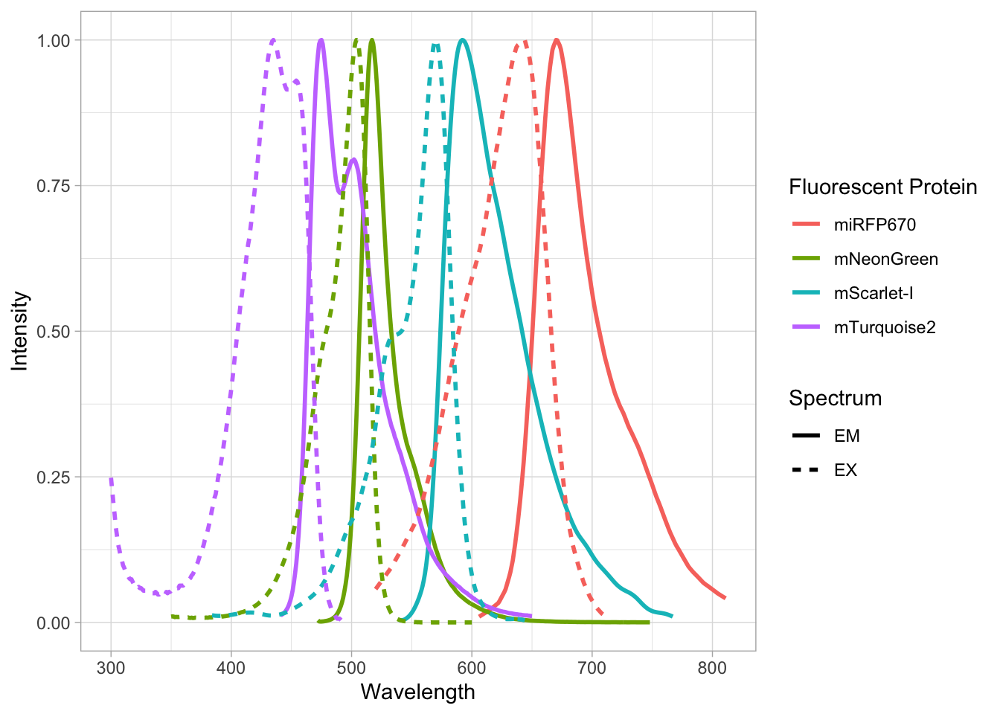
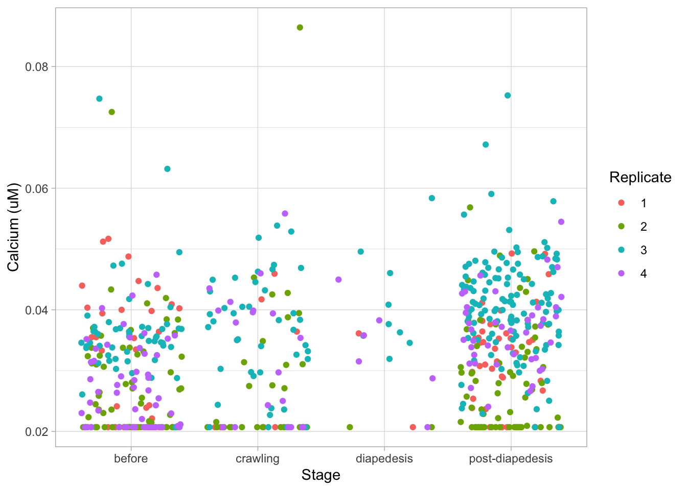
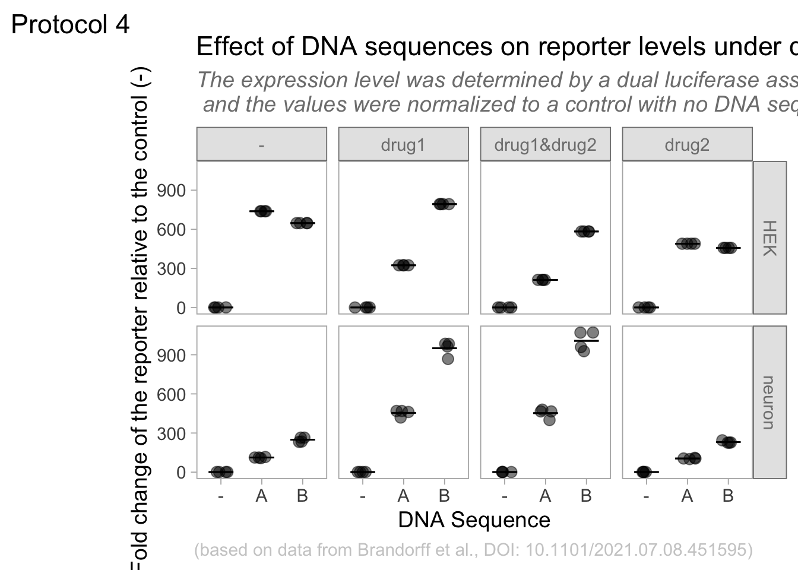
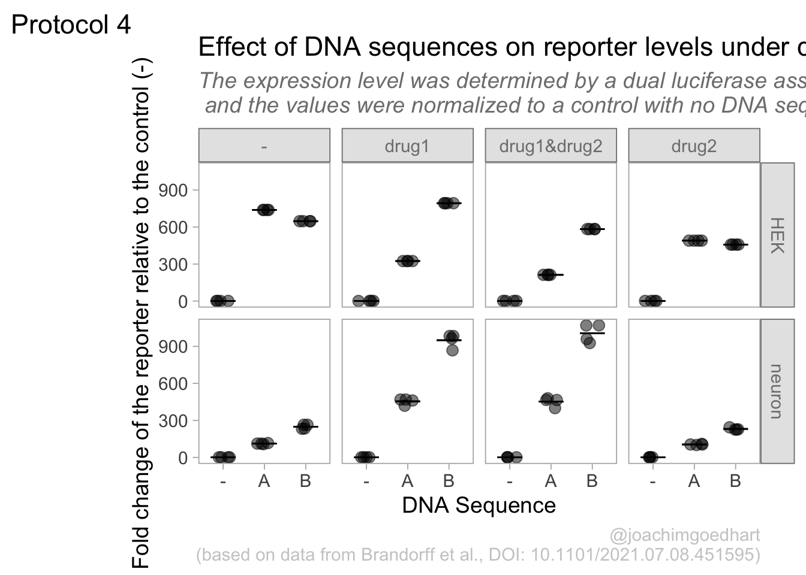
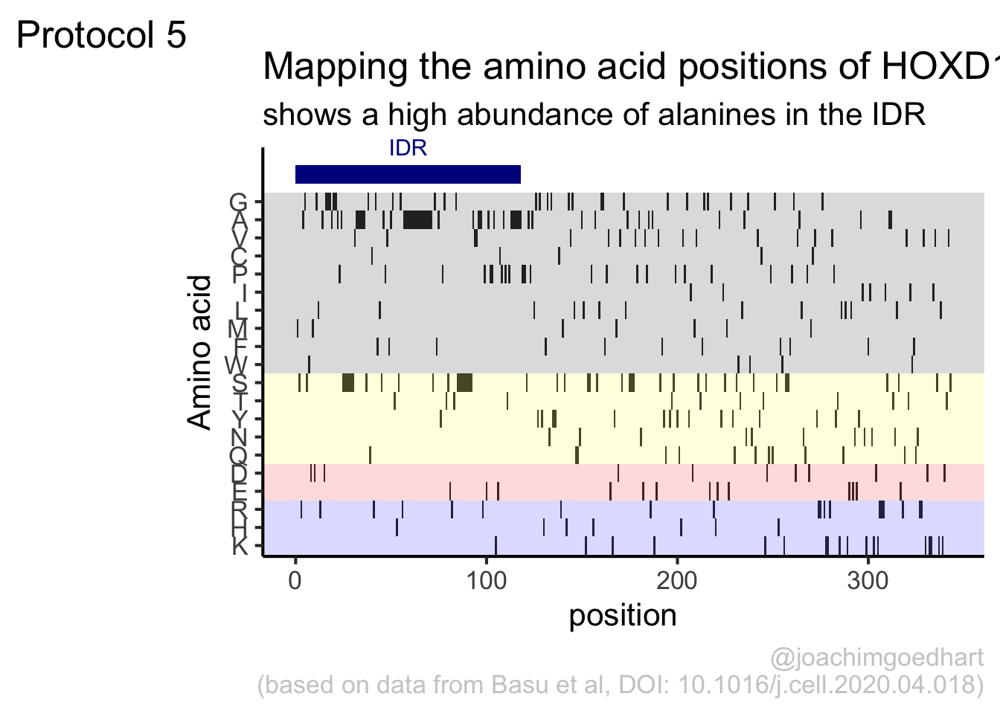

Chapter 4 Complete protocols
This chapter showcases a number of complete protocols for different kinds of data visualizations. Each protocol starts with the raw data and ends with a publication quality plot. The data is available from Github, just follow this link. In the same folder you can find the R markdown files for each protocol. To reproduce the data visualizations you can either take the data and follow the instructions in the chapter. Alternatively you can download the R markdown file (and the data) and run it step by step. The R markdown files can be used as a starting point to apply the same visualization to your own data.
4.1 Protocol 1 - Spectra of fluorescent proteins
This protocol describes how you can turn a csv with spectral data that is obtained from FPbase.org into a plot of those spectra. First, we load the required package:
For this data visualization, I selected several spectra from fluorescent proteins at FPbase.org: https://www.fpbase.org/spectra/?s=1746,6551,101,102,123,124,1604,1606&showY=0&showX=1&showGrid=0&areaFill=1&logScale=0&scaleEC=0&scaleQY=0&shareTooltip=1&palette=wavelength
The data was downloaded in CSV format (by clicking on the button in the lower right corner of the webpage) and renamed to ‘FPbase_Spectra_4FPs.csv’.
We read the data from the CSV by using the read_csv() function. This function is part of the tidy verse and loads the data as a tibble. It also guesses type of data for each column. To hide that information, we use show_col_types = FALSE here.
Let’s briefly look at what we have loaded:
Rows: 512
Columns: 9
$ Wavelength <dbl> 300, 301, 302, 303, 304, 305, 306, 307, 308, 309, 310…
$ `mTurquoise2 EM` <dbl> NA, NA, NA, NA, NA, NA, NA, NA, NA, NA, NA, NA, NA, N…
$ `mTurquoise2 EX` <dbl> 0.2484, 0.2266, 0.2048, 0.1852, 0.1634, 0.1482, 0.132…
$ `mNeonGreen EM` <dbl> NA, NA, NA, NA, NA, NA, NA, NA, NA, NA, NA, NA, NA, N…
$ `mNeonGreen EX` <dbl> NA, NA, NA, NA, NA, NA, NA, NA, NA, NA, NA, NA, NA, N…
$ `mScarlet-I EM` <dbl> NA, NA, NA, NA, NA, NA, NA, NA, NA, NA, NA, NA, NA, N…
$ `mScarlet-I EX` <dbl> NA, NA, NA, NA, NA, NA, NA, NA, NA, NA, NA, NA, NA, N…
$ `miRFP670 EM` <dbl> NA, NA, NA, NA, NA, NA, NA, NA, NA, NA, NA, NA, NA, N…
$ `miRFP670 EX` <dbl> NA, NA, NA, NA, NA, NA, NA, NA, NA, NA, NA, NA, NA, N…The data needs conversion to a tidy format before plotting. Since we have a single continuous data column with Wavelength information that is used for the x-axis, it is excluded from the operation:
There are several rows that have NA values for Intensity and this is how to get rid of that:
The column ‘Sample’ has labels for the fluorescent protein and the type of spectrum. We can separate that column into two different columns that we name ‘Fluorescent Protein’ and ‘Spectrum’:
Let’s do a first attempt and plot the data:
ggplot(
data = df_1,
aes(x = Wavelength, y = Intensity, color = `Fluorescent Protein`)
) +
geom_line(aes(linetype = Spectrum), size = 1)This looks pretty good already. Now let’s change the order of the fluorescent proteins to their order in the plot:
df_1 <- df_1 %>%
mutate(`Fluorescent Protein` = forcats::fct_relevel(
`Fluorescent Protein`,
c("mTurquoise2", "mNeonGreen", "mScarlet-I", "miRFP670")
))The data is in the right shape now, so let’s save it:
We define the plot object and add an extra geometry, geom_area() to fill the area under the curves:
p <-
ggplot(
data = df_1,
aes(
x = Wavelength, y = Intensity,
fill = `Fluorescent Protein`
)
) +
geom_line(aes(linetype = Spectrum),
size = 0.5, alpha = 0.5
) +
geom_area(
aes(linetype = Spectrum),
color = NA,
position = "identity",
size = 1,
alpha = 0.5
)Let’s check the result:
Next, we set the limits of the axis and force the y-axis to start at 0
p <-
p + scale_y_continuous(expand = c(0, 0), limits = c(0, 1.1)) +
scale_x_continuous(expand = c(0,0), limits = c(350, 810))Add labels:
p <-
p + labs(
title = "Spectra of Fluorescent Proteins",
x = "Wavelength [nm]",
y = "Normalized Intensity [a.u.]",
caption = "(based on data from FPbase.org)",
tag = "Protocol 1"
)Modify the layout by adjusting the theme. Comments are used to explain effect of the individual lines of code:
p <-
#Set text size
p + theme_light(base_size = 14) + theme(
plot.caption = element_text(
color = "grey80",
hjust = 1
),
#Remove grid
panel.grid.major = element_blank(),
panel.grid.minor = element_blank(),
#Set position of legend
legend.position = "top",
legend.justification = "left"
#Define the legend layout
) + guides(
linetype = "none",
fill = guide_legend(title = NULL, label.position = "right")
)
We are almost there, except that the colors of the plot do not match with the natural colors of the fluorescent proteins. Let’s fix that by defining a custom color palette. The order of the colors matches with the order of the fluorescent proteins that was defined earlier:
To apply the custom colors to the filled area:
This is the result:

To save this plot as a PNG file:
png(file=paste0("Protocol_1.png"), width = 4000, height = 2600, units = "px", res = 400)
p
dev.off()quartz_off_screen
2 4.2 Protocol 2 - A superplot of calcium concentrations
This protocol is used to create a superplot which differentiates between technical and biological replicates. The concept of superplots has been reported by Lord and colleagues (Lord et al., 2021). We will use the data from a publication by van der Linden et al. (2021) which was used to create figure 5e.
The original figure summarizes the data from all experiments and does not identify the biological replicates. Below, we will differentiate the biological replicates, by treating each batch of neutrophils as a biological replicate.
We start by loading the required tidyverse package:
We define the confidence level as 95%:
The data is stored in an excel sheet and we read it, skipping the first 6 lines which contain comments:
Let’s look at the data:
# A tibble: 6 x 7
`Experimental day` `Replicate no.` `Neutrophil no.` `Batch no. neutroph… Stage
<dbl> <dbl> <dbl> <dbl> <chr>
1 1 1 1 1 befo…
2 1 1 1 1 befo…
3 1 1 1 1 befo…
4 1 1 1 1 befo…
5 1 1 1 1 befo…
6 1 1 1 1 befo…
# … with 2 more variables: dF/F0 <chr>, Calcium (uM) <dbl>The data is already in a tidy format. The column with ‘Stage’ has the four different conditions for which we will compare the data in the column ‘Calcium (uM)’. We change the name of the column ‘Batch no. neutrophils’ to ‘Replicate’ and make sure the different replicates are treated as factors (qualitative data):
Let’s look at the data, and identify the biological replicates, as suggested in the original publication on Superplot by (Lord et al., 2021). In this example a color code is used to label the replicates:
ggplot(data=df_raw, aes(x=Stage)) +
geom_jitter(data=df_raw, aes(x=Stage, y=`Calcium (uM)`, color=Replicate))
To display the statistics for the individual biological replicates, we define a new dataframe. To this end, we group the data for the different stages and biological replicates:
`summarise()` has grouped output by 'Stage'. You can override using the `.groups` argument.Next, we use ‘df_summary’ which holds the averages of each biological replicate, and we calculate the statistics for the different conditions:
df_summary_replicas <- df_summary %>% group_by(Stage) %>%
mutate(n_rep=n(), mean_rep=mean(mean), sd_rep = sd(mean)) %>%
mutate(sem = sd_rep / sqrt(n_rep - 1),
`95%CI_lo` = mean_rep + qt((1-Confidence_level)/2, n_rep - 1) * sem,
`95%CI_hi` = mean_rep - qt((1-Confidence_level)/2, n_rep - 1) * sem,
NULL)The dataframe has the summary of the conditions and note that each condition has a summary of 4 biological replicates:
# A tibble: 6 x 10
# Groups: Stage [2]
Stage Replicate n mean n_rep mean_rep sd_rep sem `95%CI_lo`
<chr> <fct> <int> <dbl> <int> <dbl> <dbl> <dbl> <dbl>
1 before 1 38 0.0305 4 0.0301 0.00414 0.00239 0.0225
2 before 2 67 0.0270 4 0.0301 0.00414 0.00239 0.0225
3 before 3 56 0.0358 4 0.0301 0.00414 0.00239 0.0225
4 before 4 55 0.0270 4 0.0301 0.00414 0.00239 0.0225
5 crawling 1 7 0.0296 4 0.0317 0.00339 0.00196 0.0255
6 crawling 2 29 0.0289 4 0.0317 0.00339 0.00196 0.0255
# … with 1 more variable: 95%CI_hi <dbl>We can now add or ‘bind’ the data of ‘df_summary_replicas’ to the original dataframe ‘df’ and store this as a dataframe ‘df_2’:
Let’s save this data:
Let’s first define a basic plot with all of the data for each stage shown as a violinplot:
p <- ggplot(data=df_2, aes(x=Stage)) +
geom_violin(data=df_2, aes(x=Stage, y=`Calcium (uM)`), color=NA, fill="grey80")This is what it looks like:

We add the 95% confidence interval from the summary of the biological replicates as a line:
And we add the mean value of each replicate as a dot. Here, the size of the dot is reflecting n:
The function scale_size_area() ensures that 0 is represented as an area of 0 and allows to to define that an n of 10,50 and 90 is shown in the legend:
This is what that looks like:
Next, one of my favorite tweaks for discrete conditions is to rotate the plot 90 degrees. At the same time, the limits are defined.
p <- p + coord_flip(ylim = c(0.02,0.09)) +
# This ensures correct order of conditions when plot is rotated 90 degrees
scale_x_discrete(limits = rev)Rotation improves readability of the labels for the conditions, even when they are long. It also easier to read the different calcium levels:

To guide the interpretation, a line is added as a threshold of 0.06 µM (=60 nM):
Adjusting the axis labels and adding a title and caption:
p <-
p + labs(
title = "Calcium concentrations are less than 60 nM",
subtitle = "at different stages of transendothelial migration",
x = "Stage",
y = "Calcium [µM]",
caption = "(based on data from van der Linden, DOI: 10.1101/2021.06.21.449214)",
tag = "Protocol 2"
)The layout it further optimized. The most tricky part is positioning of the label for the different conditions. It is placed right above the conditions, which I really like. However, getting this right involves a bit of trial and error and I recommend playing with the parameters to see how it affects the positioning. Something similar applies to the legend which is moved into the lower right corner of the plot, although this is eassier to accomplish. The comments explain the effect of the different lines:
p <-
#Set text size
p + theme_classic(base_size = 16) + theme(
plot.caption = element_text(
color = "grey80",
hjust = 1
),
#Set position of legend to lower right corner
legend.position = c(0.88,0.15),
#This line positions the label ('title') of the conditions
axis.title.y = element_text(vjust = 0.98, angle = 0, margin=margin(l=70)),
#This line positions the names of the conditions
#A negative margin is needed for aligning the y-axis 'title' with the 'text'
axis.text.y = element_text(vjust = 0.5, hjust=1, angle = 0, margin=margin(l=-90, r=5)),
#Move 'tag', so its position partially overlaps with the conditions
plot.tag.position = c(0.06,0.99)
) + guides(fill = "none",
size = guide_legend(title = 'n per replicate', label.position = "left")
)
To save the plot as a PNG file:
png(file=paste0("Protocol_2.png"), width = 4000, height = 3000, units = "px", res = 400)
p
dev.off()quartz_off_screen
2 4.3 Protocol 3 - small multiples of time courses
This protocol displays a number of different timecourses as ‘small multiples’. Small multiples, as the name suggests, displays many small plot separately as a stamp collection. By stressing the data, rather than the labels and grids, this can be a powerful visualization strategy.
The data is taken from a publication by Arts et al. (2021) and we recreate figure panel 1F. The original figure is in small multiple format, but we tweak it a bit more to increase the focus on the data.
Let’s first load the necessary package:
The data comes from an excel file:
# A tibble: 6 x 13
time `neutro 1` `neutro 2` `neutro 3` `neutro 4` `neutro 5` `neutro 6`
<dbl> <dbl> <dbl> <dbl> <dbl> <dbl> <dbl>
1 0 0.53 0.54 0.55 0.59 0.58 0.34
2 10 0.44 0.6 0.5 0.4 0.54 0.4
3 20 0.33 0.55 0.64 0.3 0.48 0.41
4 30 0.35 0.54 0.69 0.28 0.52 0.32
5 40 0.41 0.53 0.57 0.23 0.44 0.29
6 50 0.32 0.4 0.4 0.26 0.43 0.25
# … with 6 more variables: neutro 7 <dbl>, neutro 8 <dbl>, neutro 9 <dbl>,
# neutro 10 <dbl>, neutro 11 <dbl>, neutro 12 <dbl>It is in a wide format, so we need to make it tidy. The parameter that was measured over time is the ‘roundness’ of cells:
The data is in the right shape now, so let’s save it:
First we create a line plot of all the data:

With the facet_wrap() function, we turn this into a small multiple:

Set the limits of the axis and force the y-axis to start at 0
p <-
p + scale_y_continuous(expand = c(0, 0), limits = c(0, 1.0)) +
scale_x_continuous(expand = c(0,0), limits = c(0, 300))Use a minimal theme and remove the strips and grid to increase focus on the data:
p <- p + theme_minimal(base_size = 14)
p <- p + theme(strip.background = element_blank(),
strip.text = element_blank(),
plot.caption = element_text(color = "grey80"),
#Remove grid
panel.grid.major = element_blank(),
panel.grid.minor = element_blank()
)
p
I do not like the repeated axis for the different plots. We can remove those:

This is a very minimal plot, focusing entirely on the data. It may work well, but it is informative to add some information about the scaling of the x- and y-axis. To achieve this, I add lines to the lower left plot, which correspond to the data of ‘neutro 6’ (you can see this in the small multiple plot where each plot was labeled). I define a new dataframe with the x- and y-scale for ‘neutro 6’ to do just that:
ann_line<-data.frame(xmin=0,xmax=300,ymin=0,ymax=1,
Cell=factor("neutro 6",levels=c("neutro 6")))
ann_line xmin xmax ymin ymax Cell
1 0 300 0 1 neutro 6This dataframe can now be used to draw two lines with geom_segment():
p <- p +
#Vertical line
geom_segment(data=ann_line, aes(x=xmin,xend=xmin,y=ymin,yend=ymax), size=2, color='grey40') +
#Horizontal line
geom_segment(data=ann_line, aes(x=xmin,xend=xmax,y=ymin,yend=ymin), size=2, color='grey40') +
NULL
p
The plot is now in black and white which gives it a strong contrast. We can make it a bit more soft and pleasant to look at by changing to shades of grey. Also, the labels of the axes are moved next to the lines:
p <- p +
theme(panel.background = element_rect(fill='grey98', color=NA),
panel.border = element_rect(color='grey90', fill=NA),
axis.title.x = element_text(size=14, hjust = 0, color='grey40'),
axis.title.y = element_text(size=14, vjust = 0, hjust=0, angle = 90, color='grey40'),
) Finally, we add a title, caption, and labels (and a scale in brackets):
p <-
p + labs(
title = "Changes in the shape of migrating cells over time",
x = "Time [300s]",
y = "Circularity [0-1]",
caption = "(based on data from Arts et al., DOI: 10.3389/fimmu.2021.667213)",
tag = "Protocol 3"
) 
png(file=paste0("Protocol_3.png"), width = 4000, height = 3200, units = "px", res = 400)
p
dev.off()quartz_off_screen
2 4.4 Protocol 4 - Plotting data from a 96-wells experiment
This protocol showcases some serious data wrangling and tidying. One reasons is that the data is acquired with a 96-wells plate reader and the data is stored according to the layout of the plate. This makes total sense from a human perspective, but it is not well suited for data visualization.
In addition, the plate is measured twice. One measurement is the luminescence from a luciferase and the other measurement is the luminescence from Renilla. The latter reading serves as a reference and therefore, the luciferase data is divided by the Renilla intensities. A final step before the data is visualized is a normalization to a control condition.
The code that is shown here is also the basis for the plotXpress app that can be used to process and visualize the data. In fact, the data visualization is very close to the standard output of plotXpress and uses the same example data.
We start by loading a package that we need:
The measured data is read from an excel sheet. Note that this is the raw data that is stored by the software that operates the plate reader:
New names:
* `` -> ...1
* `` -> ...2
* `` -> ...3
* `` -> ...5
* `` -> ...6
* ...The experimental conditions for each well are stored in a separate CSV file, generated by the experimentalist that did the experiment:
Wells condition treatment1 treatment2
1 A01 - HEK -
2 B01 - HEK -
3 C01 - HEK -
4 D01 - HEK -
5 E01 - neuron -
6 F01 - neuron -You can see that the design file is tidy. In contrast the excel file with data is far from tidy. In the excel sheet, two ‘rectangles’ of cells define the data for the firefly & renilla reads. The data is subset and converted to a vector
firefly <- df_raw[19:26,6:17] %>% unlist(use.names = FALSE)
renilla <- df_raw[40:47,6:17] %>% unlist(use.names = FALSE)Define a dataframe with wells
For convenience, all numbers should consist of 2 digits and so we add a zero that precedes the single digit numbers:
To generate a unique index for each row in the dataframe, we define ‘Wells’, which combines the row and column index:
Next, we create a dataframe that holds the data of individual columns, rows and wells:
column row Wells
1 1 A A01
2 1 B B01
3 1 C C01
4 1 D D01
5 1 E E01
6 1 F F01Add to df_plate the vectors with data from firefly and renilla reads
Merge the design with the data, based on the well ID - left_join() is used to add only data for wells that are listed in the design dataframe
Wells condition treatment1 treatment2 column row firefly renilla
1 A01 - HEK - 1 A 2010 2391540
2 B01 - HEK - 1 B 3210 2391639
3 C01 - HEK - 1 C 1965 2390991
4 D01 - HEK - 1 D 2381 2391774
5 E01 - neuron - 1 E 1292 269021
6 F01 - neuron - 1 F 991 268918Calculate the relative expression from the firefly/renilla ratio
Take all control conditions and calculate the average value
df_norm <- df_4 %>% filter(condition == "-") %>%
group_by(treatment1,treatment2) %>%
summarise(mean=mean(expression)) `summarise()` has grouped output by 'treatment1'. You can override using the `.groups` argument.Combine the mean values (needed for normalization) values with the df_4 dataframe
Calculate the Fold Change by normalizing all measurements against the control (-)
The result is a dataframe that holds all the necessary data:
Wells condition treatment1 treatment2 column row firefly renilla expression
1 A01 - HEK - 1 A 2010 2391540 0.0008404626
2 B01 - HEK - 1 B 3210 2391639 0.0013421758
3 C01 - HEK - 1 C 1965 2390991 0.0008218350
4 D01 - HEK - 1 D 2381 2391774 0.0009954954
5 E01 - neuron - 1 E 1292 269021 0.0048025991
6 F01 - neuron - 1 F 991 268918 0.0036851382
mean Fold Change
1 0.0009999922 0.8404692
2 0.0009999922 1.3421863
3 0.0009999922 0.8218414
4 0.0009999922 0.9955032
5 0.0040858977 1.1754085
6 0.0040858977 0.9019164The data is in the right shape now, so let’s save it:
Based on the dataframe, we can create a plot with jittered dots that show the data:
To splot the graphs based on treatment1 (vertical) and treatment2 (horizontal) we use the facet_grid() function:
We add a horizontal line for mean value:
Add labels:
p <-
p + labs(
title = "Effect of DNA sequences on reporter levels under different conditions",
subtitle = "The expression level was determined by a dual luciferase assay\n and the values were normalized to a control with no DNA sequence (-)",
x = "DNA Sequence",
y = "Fold change of the reporter relative to the control (-)",
caption = "(based on data from Brandorff et al., DOI: 10.1101/2021.07.08.451595)",
tag = "Protocol 4"
) Set the theme and font size:
Format the facet labels (strips) and the caption + subtitle
p <- p + theme(strip.background = element_rect(fill="grey90", color="grey50"),
strip.text = element_text(color="grey50"),
plot.caption = element_text(color = "grey80"),
plot.subtitle = element_text(color = "grey50", face = "italic"),
#Remove the grid
panel.grid.major = element_blank(),
panel.grid.minor = element_blank()
)Let’s look at the result:

To save the plot as a png file:
png(file=paste0("Protocol_4.png"), width = 4000, height = 3200, units = "px", res = 400)
p
dev.off()quartz_off_screen
2 4.5 Protocol 5 - A map of amino acids
This data visualization plots the position of amino acids in a given protein. It is inspired by figure 2A of the paper by Basu et al. (2020)
Let’s load the tidyverse package:
First, we define a vector with the 20 amino acids and the order in which we plot them. The amino acids are grouped as hydrophobic (G,A,V,C,P,I,L,M,F,W), hydrophilic (S,T,Y,N,Q), acidic (D,E) and basic (R,H,K).
[1] "G" "A" "V" "C" "P" "I" "L" "M" "F" "W" "S" "T" "Y" "N" "Q" "D" "E" "R" "H"
[20] "K"The protein sequence that we will use is the Homo sapiens Homeobox protein Hox-D13:
protein <- c("MSRAGSWDMDGLRADGGGAGGAPASSSSSSVAAAAASGQCRGFLSAPVFAGTHSGRAAAA
AAAAAAAAAAASGFAYPGTSERTGSSSSSSSSAVVAARPEAPPAKECPAPTPAAAAAAPP
SAPALGYGYHFGNGYYSCRMSHGVGLQQNALKSSPHASLGGFPVEKYMDVSGLASSSVPA
NEVPARAKEVSFYQGYTSPYQHVPGYIDMVSTFGSGEPRHEAYISMEGYQSWTLANGWNS
QVYCTKDQPQGSHFWKSSFPGDVALNQPDMCVYRRGRKKRVPYTKLQLKELENEYAINKF
INKDKRRRISAATNLSERQVTIWFQNRRVKDKKIVSKLKDTVS")The protein sequence may contain end-of-line characters “” after copy pasting and we need to remove these:
Next, the protein sequence is split into single characters and we assign this vector to aa:
We generate a dataframe with a column with the amino acids and a column that defines their position:
Now we reorder the data frame to the order of the amino acids that we defined earlier in the vector amino_acid_ordered:
The basic plot shows a black tile for each amino acid. Note that the y-axis order is defined by the vector amino_acid_ordered, but it needs to be reverted to order the amino acids from top to bottom along the y-axis (which is naturally starts at the bottom it corresponds to the origin).
The data is in the right shape now, so let’s save it:
p <- ggplot() + geom_tile(data=df_5, aes(x=position, y=aa)) +
scale_y_discrete(limits = rev(amino_acid_ordered))
pSet the theme to classic, to get rid off the ‘frame’ around the plot and the grid.
For each of the four classes of amino acids we can define a box with a color that indicates the class. For example, there are three basic residues that will have a rectangle filled with blue in the background. The amino acids are factors, but we need numbers to define the coordinates for the rectangle. In a plot with a factors (here on the y-axis) their position is defined by a (non visible) natural number. Therefore we can define a box with the function annotate() for the first residue with y-coordinates ymin=0.5 and ymax=1.5:
 In this way, we define four colored rectangles that reflect the different amino acids categories; blue=basic, red=acidic, yellow=hydrophilic, grey=hydrophobic:
In this way, we define four colored rectangles that reflect the different amino acids categories; blue=basic, red=acidic, yellow=hydrophilic, grey=hydrophobic:
p <- p + annotate(geom = "rect", xmin = -Inf, ymin = 0.5, xmax = Inf, ymax=3.5, fill='blue', alpha=0.15)
p <- p + annotate(geom = "rect", xmin = -Inf, ymin = 3.5, xmax = Inf, ymax=5.5, fill='red', alpha=0.15)
p <- p + annotate(geom = "rect", xmin = -Inf, ymin = 5.5, xmax = Inf, ymax=10.5, fill='yellow', alpha=0.15)
p <- p + annotate(geom = "rect", xmin = -Inf, ymin = 10.5, xmax = Inf, ymax=20.5, fill='black', alpha=0.15)Let’s look at the result:

Adjusting the axis labels and adding a title and caption:
p <-
p + labs(
title = "Mapping the amino acid positions of HOXD13",
subtitle = "shows a high abundance of alanines in the IDR",
y = "Amino acid",
caption = "(based on data from Basu et al, DOI: 10.1016/j.cell.2020.04.018)",
tag = "Protocol 5"
)And a final tweak of the label style and location:
In the original paper, a region of the protein is annotated as an ‘intrinsically disordered region’ abbreviated as IDR. Here, we we use the annotate() function to add a rectangle and a label to the top of the plot:
p <- p + annotate("rect", xmin=0, xmax=118, ymin=21, ymax=22, fill='darkblue') +
annotate("text", x=59, y=23, alpha=1, color='darkblue', size=4,label='IDR')
p
To avoid clipping of the new label by the subtitle of the plot:

The subtitle is quite close to the IDR label. Let’s give the subtitle a bit more room, by adding a margin at the bottom of the subtitle. This can be done with the theme() function to style the subtitle:

Finally we can save the plot:
png(file=paste0("Protocol_5.png"), width = 4000, height = 3200, units = "px", res = 400)
p
dev.off()quartz_off_screen
2 In progress
This chapter is ‘in progress’ and I plan to add more protocols in the future. A list of ideas:
- 6: Heatmap of timeseries data (with sorting)
- 7: Waterfall plot (timeseries)
- 8: 96-well plate
- 9: Dose-reponse curves
- 10: Plot data from a Google form
- 11: Polar plot with Timestamp data
- 12: Annotated timeseries (optogenetics)
- Volcano plot
- Animated plot
- Multipanel figure (KTR data)
- correlation/regression/Bland-Altman
- Plots of Effect size (differences)
- Permutated p-values (not strictly dataViz)
- Bootstrapped confidence intervals